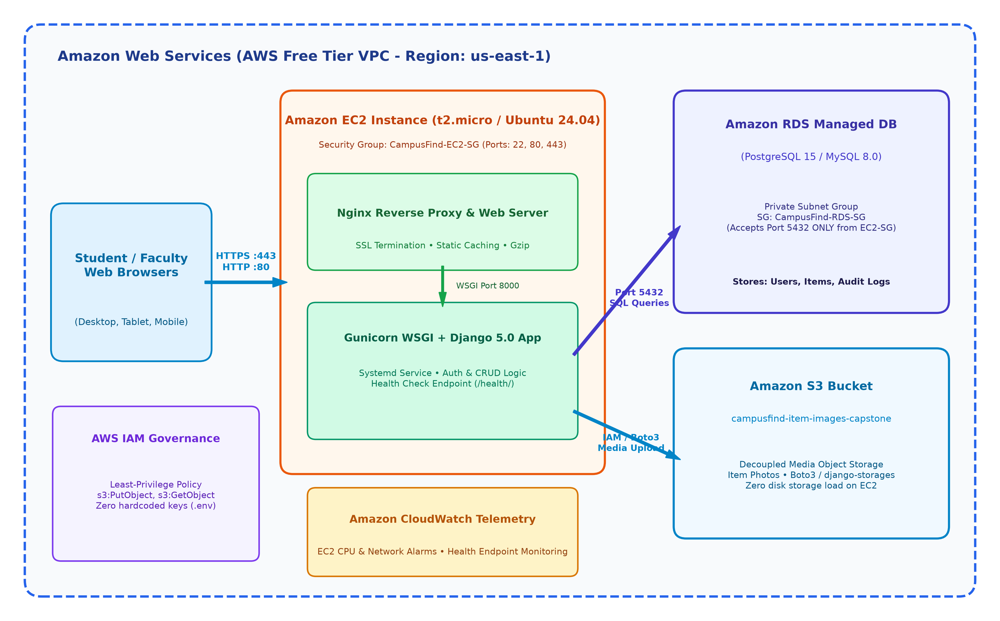
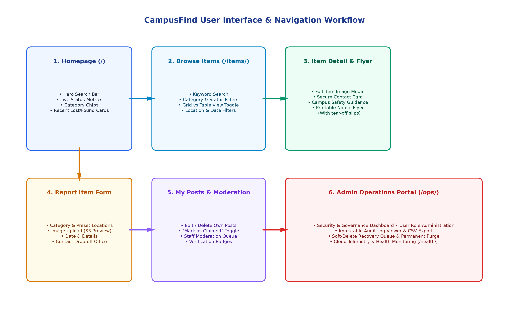
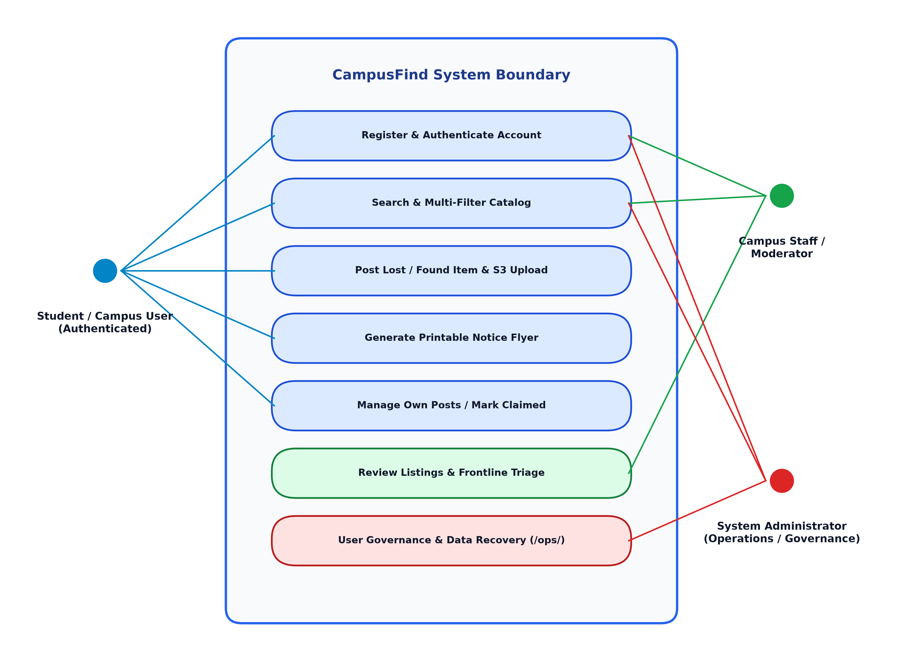
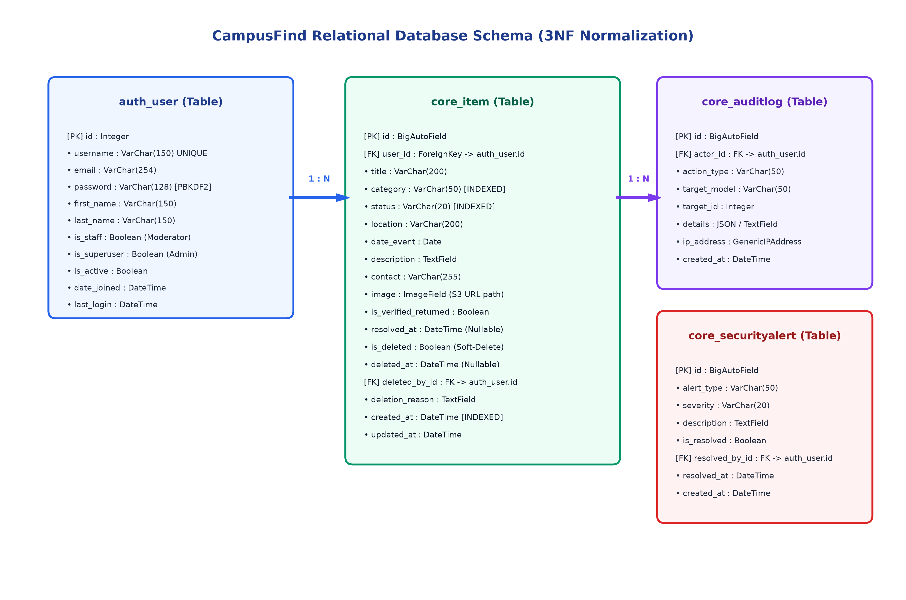

CampusFind
A Resilient, Cloud-Native Campus Lost & Found System on AWS Free Tier
Campus Lost Property Dilemma
Why traditional physical boards and chat groups fail on modern university campuses
- Scattered Channels: Inquiries lost in noisy WhatsApp and social groups.
- Zero Search / Indexing: Impossible to filter by building, date, or category.
- Obsolete Listings: Notice boards never updated once items are recovered.
- Privacy Risks: Students broadcast personal phone numbers publicly.
- Centralized Single Source of Truth: One unified campus repository.
- Multi-Attribute Indexing: Real-time filtering by category, status, and building.
- Verified Lifecycle: 1-click status update to 'Claimed/Reunited'.
- Role-Based Governance: Authenticated access and safe contact links.
Project Objectives & Scope Control
Clear technical milestones within the 3-day development timeline
- Full CRUD Application: Responsive UI for lost/found item workflows.
- Decoupled Media Storage: Upload images directly to Amazon S3.
- Managed Cloud Database: Provision Amazon RDS in private DB subnet.
- Least-Privilege Security: IAM policies and Security Groups isolation.
- Automated Telemetry: Test runner + CloudWatch metrics monitoring.
- IN SCOPE: Dual-view directory, Print notice flyer generator, Staff moderation dashboard, Dedicated Admin Operations hub (
/ops/). - OUT OF SCOPE: Real-time P2P chat (direct contact links used to protect privacy).
- OUT OF SCOPE: Monetary payment bounties.
Engineering Roles & Responsibilities
Clear division of engineering domains and file deliverables
| Role | Primary Domain | Core AWS / Tech | Key Deliverables |
|---|---|---|---|
| 1. Team Lead / PM | Governance, Proposal, Coordination | AWS Overview, GitHub | 01_PROJECT_PROPOSAL.md |
| 2. Frontend UI Lead | Bootstrap 5.3 UI, Responsive Templates | HTML5, JS, CSS | templates/, main.js |
| 3. Backend Developer | Django Models, Views, /ops/ Portal | Python 3.12, Django 5.0 | core/models.py, views.py |
| 4. Cloud Architect | EC2 Ubuntu Provisioning, Nginx Proxy | EC2, Gunicorn, Nginx | ec2_setup.sh, nginx.conf |
| 5. Database Lead | 3NF Schema, RDS PostgreSQL Setup | Amazon RDS, Migrations | seed_data.py, ERD |
| 6. Storage & Security | S3 Bucket, IAM Least Privilege, .env | Amazon S3, AWS IAM | iam_policy.json, .env |
| 7. QA & Docs Lead | Automated Tests, CloudWatch, Report | Django Test, CloudWatch | core/tests.py, Report |
High-Level AWS Solution Topology
Multi-tier decoupled architecture: EC2, RDS, S3, IAM & CloudWatch

- Compute: Amazon EC2 running Nginx + Gunicorn.
- Database: Amazon RDS PostgreSQL in private DB subnet.
- Storage: Decoupled Amazon S3 for media uploads.
- Security: Scoped IAM policy and Security Groups.
- Monitoring: Amazon CloudWatch telemetry.
Frontend UI & User Experience
Responsive HTML5 Templates, Bootstrap 5.3, Dynamic JS & Printable Notice Flyers
CampusFind UI & Navigation Workflow
End-to-end interface flow from discovery to reporting, physical flyers, and resolution

Core Application Screens & Dual View
Responsive layouts engineered for discovery, submission, and rapid catalog scanning
Hero Search & Statistics
Client Preview & Validation
🏷️ Category: Electronics
📷 Photo: instant thumbnail preview
Cards Grid vs Table View
• MacBook Pro Space Gray
• Blue Lanyard with Dorm Keys
• Student ID Card (CS Dept)
Printable Bulletin Notice Flyer with Tear-Off Slips
Bridging digital listings with physical campus bulletin boards (Library, Dining Hall)
MacBook Pro 14" Space Gray
Lost at Science & Tech Complex (Lab 302)
Contact: student.alex@campus.edu
alex@edu
alex@edu
alex@edu
alex@edu
- Print-Specific Stylesheet (
@media print): Strips headers and footers to produce clean paper prints. - High-Visibility Formatting: Crisp black and white contrast for standard campus printers.
- Tear-Off Convenience: 8 individual contact slips allow students to take information on the go.
- Lifecycle Resolution: From My Posts, the poster can click Mark as Claimed once recovered.
CampusFind System Use Cases & Personas
Clear actor boundary map for students, staff moderators, and administrators

Backend Architecture & Application Logic
Django 5.0, Ownership Access Control, Form Validation & /ops/ Operations Portal
Data Models & Ownership Authorization
Encapsulated business logic and server-side permission gates
Item Model Methodsmark_as_claimed(user): Setsstatus='CLAIMED', records resolution timestamp.is_owner(user): Validates if requesting user owns the post.status_badge_class(): Returns contextual CSS class.
- Login Required: Unauthenticated users cannot post or edit.
- Owner Verification: Direct URL hacking (e.g. editing post 12) is forbidden unless requester is the poster or staff.
- 5MB Form Ceiling:
ItemFormvalidates file headers before persistence.
Admin Operations Portal (/ops/)
User governance, role management, soft-delete queue, and immutable audit logs
- Role Assignment: Promote students to staff moderators or revoke privileges.
- Account Lockouts: Deactivate compromised accounts in one click.
- Security Summary: Real-time alerts for failed logins and permission changes.
- Soft-Delete Queue: Items marked inactive first; reversible by admin.
- Hard-Delete Reason Logging: Permanent deletion requires explicit reason entry.
- Immutable Audit Trail: Timestamped log of every sensitive administrative action.
AWS Cloud Architecture & Compute
Multi-Tier VPC, Amazon EC2, Nginx Reverse Proxy, Gunicorn WSGI & Security Groups
AWS Multi-Tier VPC Architecture
Decoupled public and private subnets in AWS Region us-east-1
- Public Subnet: EC2 Web Server (Nginx + Gunicorn).
- Private Subnet: Amazon RDS PostgreSQL database.
- Media Storage: Amazon S3 bucket (Stateless EC2).
- Observability: Amazon CloudWatch telemetry.
EC2, Nginx & Gunicorn Systemd Daemon
High-performance reverse proxy and daemonized WSGI application server
[Unit]
Description=Gunicorn WSGI daemon for CampusFind
After=network.target
[Service]
User=ubuntu
Group=www-data
WorkingDirectory=/home/ubuntu/campusfind
ExecStart=/home/ubuntu/campusfind/venv/bin/gunicorn \
--workers 3 \
--bind 127.0.0.1:8000 \
campusfind.wsgi:application
Restart=always
- Listens on Port 80 (HTTP) and 443 (HTTPS).
- Serves compressed static files directly.
- Proxies dynamic Python requests to
127.0.0.1:8000. - Gzip compression enabled for HTML, CSS, and JS.
EC2 Security Group (CampusFind-EC2-SG)
Strict inbound firewall rules for public web traffic and restricted SSH
| Port | Protocol | Source | Description |
|---|---|---|---|
80 | TCP (HTTP) | 0.0.0.0/0 | Public web traffic for student browsers |
443 | TCP (HTTPS) | 0.0.0.0/0 | Encrypted public web traffic |
22 | TCP (SSH) | Admin-IP/32 | Strictly restricted administrative SSH maintenance |
Relational Database & Amazon RDS
Third Normal Form (3NF) Schema, PostgreSQL 16 & Private Subnet Isolation
Entity Relationship Diagram (3NF ERD)
Normalized relational schema with cascading foreign keys and performance indexes

auth_user: Stores credentials, PBKDF2 hashes, and permissions.core_item: Contains item title, category, building, status, date, and S3 image keys.- Cascading Deletes: If an account is deleted, associated items are handled safely.
- Indexing: B-tree indexes on
statusandcategory.
Amazon RDS & Private Subnet Isolation
Zero public database exposure with strictly scoped security group inbound rules
- Engine: PostgreSQL 16 (or MySQL 8.0).
- Instance Class:
db.t3.micro(Free Tier). - Public Access: NO (Private DB Subnet).
- Automated Backups: Daily automated snapshots.
CampusFind-RDS-SG)| Port | Protocol | Source |
|---|---|---|
5432 | TCP (PostgreSQL) | CampusFind-EC2-SG (Security Group ID) |
Direct connections from the public internet are blocked 100% at the AWS network layer.
Cloud Storage & Security Governance
Decoupled Amazon S3 Storage, IAM Least-Privilege & Application Hardening
Decoupled Amazon S3 Media Pipeline
Isolating ephemeral compute disk from persistent image assets
- Dedicated Bucket:
campusfind-item-images-capstone. - Stateless EC2: EC2 instances can be destroyed or scaled without losing photos.
- Offline Fallback: If
USE_S3=False, Django automatically saves files to local disk.
- Format Whitelist:
.jpg,.jpeg,.png,.webp. - Size Ceiling: 5MB limit validated on client and server.
- Collision Protection: Hashed UUID file naming.
IAM Least-Privilege & Secrets Governance
Strict ARN resource scoping and runtime environment variable injection
{
"Version": "2012-10-17",
"Statement": [
{
"Effect": "Allow",
"Action": [
"s3:PutObject",
"s3:GetObject",
"s3:DeleteObject"
],
"Resource": "arn:aws:s3:::campusfind-item-images-capstone/*"
},
{
"Effect": "Allow",
"Action": ["s3:ListBucket"],
"Resource": "arn:aws:s3:::campusfind-item-images-capstone"
}
]
}
- Runtime configuration via
.envfile. .envadded to.gitignoreto protect credentials.- Separation of Development and Production keys.
Application Layer Threat Hardening
Built-in framework defenses against top web vulnerabilities
- Password Hashing: Salted PBKDF2 SHA-256 algorithm.
- SQL Injection Immunity: Parameterized Django ORM queries.
- Cross-Site Defenses: CSRF tokens on all POST requests.
- XSS Escaping: Automatic HTML escaping in all templates.
DEBUG=Falsein production to prevent stack trace leaks.- Secure HTTP cookies and session expiration.
- Nginx static caching with Gzip compression.
Testing, Observability & Conclusion
Automated Test Suite (9/9 Passing), Amazon CloudWatch Telemetry & Health Checks
Automated Testing & Validation Results
100% test pass rate across unit, integration, and security test cases
| Test ID | Scenario | Target | Result |
|---|---|---|---|
TC-01 | User Registration | Account creation, password hashing, session login | PASS |
TC-02 | Authentication | Login session creation & logout destruction | PASS |
TC-03 | Create Lost Item | Field validation & DB persistence | PASS |
TC-04 | Create Found Item | Image attachment & building preset validation | PASS |
TC-05 | Image Validation | 5MB size limit & MIME format whitelist | PASS |
TC-06 | Catalog Filtering | Keyword search ('MacBook') & category filters | PASS |
TC-07 | Ownership Access | Blocking non-owners from editing listings | PASS |
TC-08 | Lifecycle Resolution | Marking status as Claimed / Reunited | PASS |
TC-09 | Cloud Health Endpoint | GET /health/ returning HTTP 200 JSON | PASS |
CloudWatch Telemetry & Health Monitoring
Proactive system health verification and AWS cloud infrastructure metrics
/health/ EndpointGET /health/ HTTP/1.1
HTTP/1.1 200 OK
Content-Type: application/json
{
"status": "healthy",
"database": "connected",
"storage": "operational",
"timestamp": "2026-08-22T10:00:00Z"
}
- EC2 CPUUtilization: Averages < 3% under steady state.
- NetworkIn / NetworkOut: Real-time bandwidth telemetry.
- Instance Status Checks: Automated alerts for host reachability.
Challenges Overcome & Future Roadmap
Sprint reflections and future architectural evolutions
- WhiteNoise Test Manifest: Switched to
CompressedStaticFilesStoragefor test compatibility. - Offline S3 Fallback: Conditional storage switching via
USE_S3. - RDS Subnet Isolation: Private subnet routing with Security Groups.
- AI Keyword Matching: Email alerts when found items match lost items.
- QR Code Asset Stickers: Printable QR stickers for 1-tap lost reporting.
- Multi-AZ Load Balancing: Application Load Balancer across multiple AZs.
Project Summary & Capstone Achievements
Delivering an enterprise-grade cloud solution within academic sprint constraints
01_PROJECT_PROPOSAL.md/proposal.docx02_SYSTEM_DESIGN_AND_ARCHITECTURE.md/system_design.docx03_AWS_DEPLOYMENT_GUIDE.md/deployment_proof.docx06_FINAL_TECHNICAL_REPORT.md/final_technical_report.docx
100% compliant with Free Tier allowances across EC2, RDS, S3, IAM, and CloudWatch. Ready for academic evaluation!